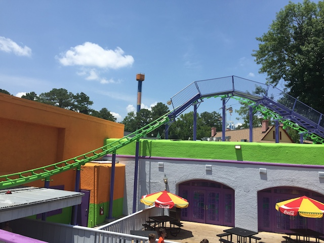
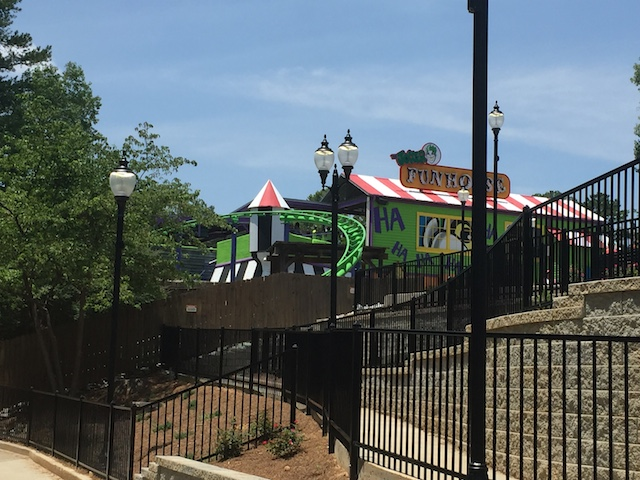

| |
Joker Funhouse Coaster Review

We're here at Six Flags Over Georgia. For credit whoring, we have Joker Funhouse Coaster. I know this is a kiddy coaster, but by kiddy coaster standards, this is actually a fairly big ride and definetly one of the better kiddy coasters. So hop in, and off we go. We go around an S Curve, and around a big turn before heading up the lifthill. Wow. This ride actually has meandering. You don't really see that on kiddy coasters. They usually just get right to the point. Not sure if that's a good thing or not. Oh well. Up the lifthill we go. It's a kiddy coaster, so yeah. You're up quickly. You then head down a curved first drop that for a kiddy coaster, has some speed. We then head over an incline, down a tiny bump, before heading down a bigger curved drop into a tunnel. You know, this is pretty good by kiddy coaster standards. This leads into a big curve, we go out of the tunnel, still under the station, but the tunnel is dissolving, and we're still in that low to the ground turn. We're out, head over another incline and into a curved drop. Is this a kiddy coaster, cause it's really good by kiddy standards. This leads into a curve, rise up a hill, and we're back in the station. And just like many kiddy coasters, you get a second lap, even though this ride is actually kind of long. I actually kind of like this ride. It's a really fun kiddy coaster. It kind of reminds me of those extra large Roller Skaters. And now I'm going to say something controversial. If you got rid of that final drop on Dahlonega Mine Train into that tunnel, then this would be the better coaster. Seriously. Minus that drop and tunnel, this ride has more drops, more ambition, and maintains its speed better. And this is a kiddy coaster I'm comparing to a mine train. Now, Dahlonega Mine Train is better due to that drop, but the sheer fact that the two are comparable shows both that this is a really good kiddy coaster and that Dahlonega Mine Train is a terrible mine train. It's actually a fun credit whoring coaster. I would recommend it for credit whores, if it wasn't for the fact that this ride gets lines as long as, if not longer than the lines for the actual major coasters in the park. AUGH!!!! >=(
4/10
Location: Six Flags Over Georgia
Opened: 2004
Built by: Chance Rides
Last Ridden: June 27, 2016
Joker's Funhouse Coaster Photos

Home
|